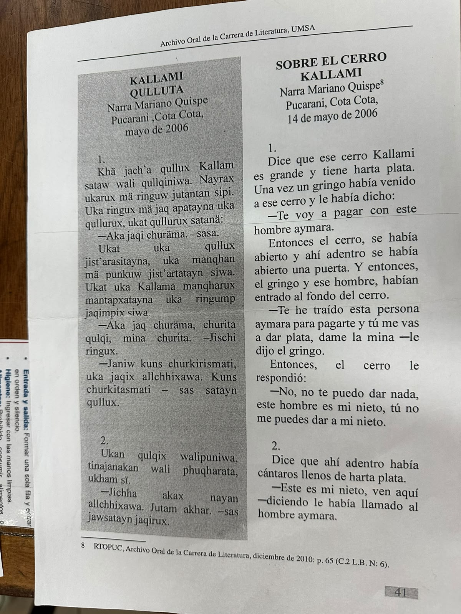
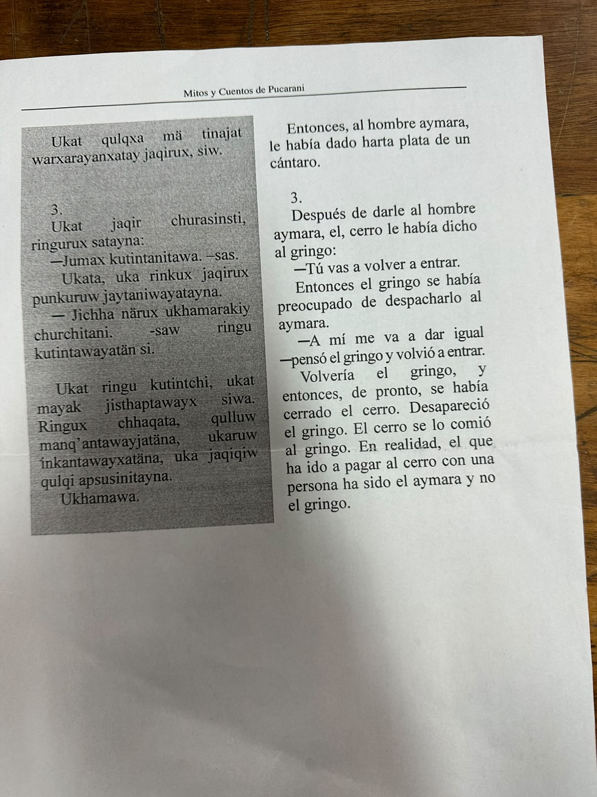

Sobre el Cerro Kallami / Kallami Qulluta
Narra Mariano Quispe · Pucarani, Cota Cota · 14 de mayo de 2006. Archivo Oral de la Carrera de Literatura, UMSA (RTOPUC, diciembre de 2010: p. 65, C.2 L.B. N.º 6). El relato se transcribe tal como aparece en la fuente, en aymara y en español.


El gringo llega al cerro
Khä jach'a qullux Kallam sataw wali qullqiniwa. Nayrax ukarux mä ringuw jutantan sipi. Uka ringux mä jaq apatayna uka qullurux, ukat qullurux satanä:
—Aka jaqi churäma. —sasa.
Ukat uka qullux jist'arasitayna, uka manqhan mä punkuw jist'artatayn siwa. Ukat uka Kallama manqharux mantapxatayna uka ringump jaqimpix siwa.
—Aka jaq churäma, churita qulqi, mina churita. —Jischi ringux.
—Janiw kuns churkirismati, uka jaqix allchhixawa. Kuns churkitasmati – sas satayn qullux.
Dice que ese cerro Kallami es grande y tiene harta plata. Una vez un gringo había venido a ese cerro y le había dicho:
—Te voy a pagar con este hombre aymara.
Entonces el cerro, se había abierto y ahí adentro se había abierto una puerta. Y entonces, el gringo y ese hombre, habían entrado al fondo del cerro.
—Te he traído esta persona aymara para pagarte y tú me vas a dar plata, dame la mina —le dijo el gringo.
Entonces, el cerro le respondió: —No, no te puedo dar nada, este hombre es mi nieto, tú no me puedes dar a mi nieto.
La recompensa al nieto
Ukan qulqix walipuniwa, tinajanakan wali phuqharata, ukham sï.
—Jichha akax nayan allchhixawa. Jutam akhar. —sas jawsatayn jaqirux.
Ukat qulqxa mä tinajat warxarayanxatay jaqirux, siw.
Dice que ahí adentro había cántaros llenos de harta plata.
—Este es mi nieto, ven aquí —diciendo le había llamado al hombre aymara.
Entonces, al hombre aymara, le había dado harta plata de un cántaro.
El castigo al gringo
Ukat jaqir churasinsti, ringurux satayna: —Jumax kutintanitawa. –sas.
Ukata, uka rinkux jaqirux punkuruw jaytaniwayatayna.
—Jichha närux ukhamarakiy churchitani. -saw ringu kutintawayatän si.
Ukat ringu kutintchi, ukat mayak jisthaptawayx siwa. Ringux chhaqata, qulluw manq'antawayjatäna, ukaruw inkantawayxatäna, uka jaqiqiw qulqi apsusinitayna. Ukhamawa.
Después de darle al hombre aymara, el cerro le había dicho al gringo: —Tú vas a volver a entrar.
Entonces el gringo se había preocupado de despacharlo al aymara.
—A mí me va a dar igual —pensó el gringo y volvió a entrar.
Volvería el gringo, y entonces, de pronto, se había cerrado el cerro. Desapareció el gringo. El cerro se lo comió al gringo. En realidad, el que ha ido a pagar al cerro con una persona ha sido el aymara y no el gringo.